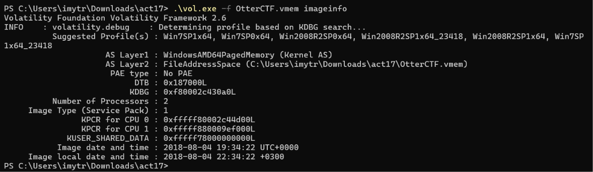
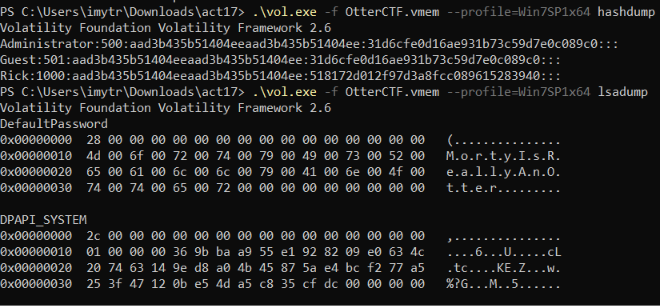
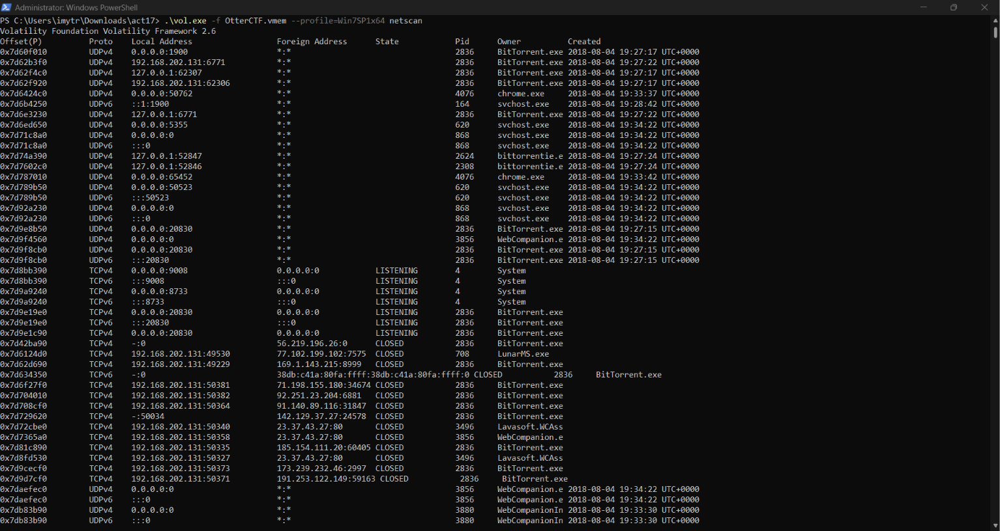
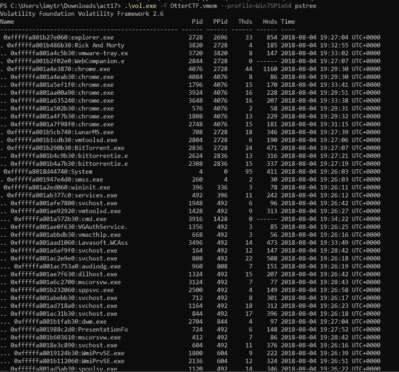
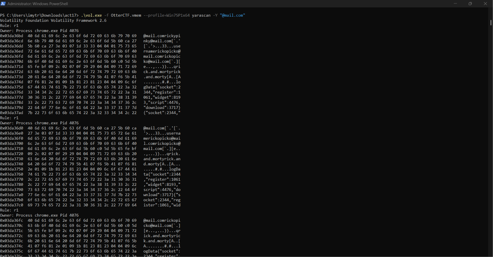
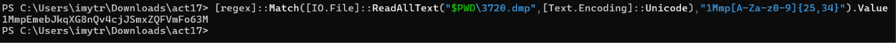

Actividad 17 — La memoria del crimen: extracción de evidencia de un volcado RAM
CNO IV — Programación WAP
Alumna: Tristán Rivera Magdalena Yesenia — 174702 | Grupo: T37A
Docente: Mtro. Servando López Contreras | Parcial: 3
Fecha: 12 de noviembre de 2026 | Caso: OtterCTF
01 — El caso
La FGM obtuvo un volcado de memoria RAM de un presunto cibercriminal autodenominado «Morty», vinculado a trasiego de estupefacientes, rapto y a la formación de una botnet. Mediante la herramienta Volatility se analizó la memoria volátil para identificar al equipo, su usuario y contraseña, las conexiones al servidor malicioso, los correos de ingeniería social y la cartera de criptomonedas usada para los rescates.
02 — Herramienta: Volatility 2.6
03 — Hallazgos
| # | EVIDENCIA | RESULTADO |
|---|---|---|
| 1 | Fecha/hora local del volcado | 2018-08-04 22:34:22 +0300 (huso de Israel) |
| 2 | Sistema operativo | Windows 7 SP1 x64 (Win7SP1x64) |
| 3 | Contraseña del perfil (usuario Rick) | MortyIsReallyAnOtter |
| 4 | IP local del equipo | 192.168.202.131 |
| 6 | Nombre del equipo | WIN-LO6FAF3DTFE |
| 7 | Procesos clave | LunarMS.exe · Rick And Morty · chrome.exe |
| 8 | Servidor malicioso | 77.102.199.102 : 7575 (Londres, UK) |
| 9 | Correos (ingeniería social) | rickopicko@mail.com · rickypinky@mail.com (Chrome) |
| 10 | Cartera Bitcoin (proceso 3720) | 1MmpEmebJkqXG8nQv4cjJSmxZQFVmFo63M |
04 — Evidencia de la ejecución






05 — Conclusión
// REFLEXIÓN TÉCNICA
El análisis de memoria volátil permitió reconstruir por completo la identidad digital del sospechoso: su equipo (WIN-LO6FAF3DTFE), su usuario y contraseña (Rick / MortyIsReallyAnOtter), el servidor de control (77.102.199.102:7575 en Londres), los correos de ingeniería social y la cartera Bitcoin usada para los rescates. Todo ello residía únicamente en la RAM.
Esto demuestra por qué la adquisición de memoria es prioritaria en la respuesta a incidentes: contraseñas, claves de cifrado, conexiones y procesos maliciosos viven en la memoria y desaparecen al apagar el equipo. Volatility, con su sistema de perfiles, es la herramienta de referencia para extraer esa evidencia de forma estructurada y reproducible.